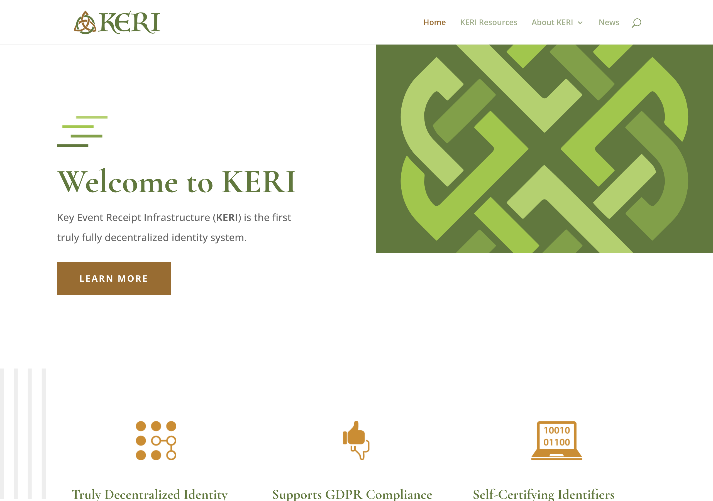

KERI and the Identity That Is Its Own History
A tribute to the system that solved the stolen-key problem with a promise made in advance
Most systems answer "who are you?" by pointing somewhere else — to a certificate authority, to a registry, to a chain that everyone has to agree on. KERI answers it by pointing at you: your identity is the signed log of everything that has ever happened to your keys, and nothing outside that log is needed to verify it. This piece is written in honor of that idea and the people behind it.

The home of KERI — Key Event Receipt Infrastructure — the project that made an identity nothing more than its own signed history of key changes.
What they do well
KERI — Key Event Receipt Infrastructure — starts from a deceptively simple inversion: the identity IS the log. Instead of anchoring who-you-are to a blockchain or a certificate authority, KERI derives a self-certifying identifier directly from your public keys, and then records every key-lifecycle event — creation, rotation, interaction — in an append-only, hash-chained sequence called a Key Event Log. That log is the single source of truth for an identifier's current key state. Anyone holding the log can verify the whole history from the beginning, with no registry to call and no authority to trust.
The centerpiece is an idea called pre-rotation, and it is genuinely beautiful. At the moment you create your identity, you don't just publish your current key — you also commit to the hash of your next key. When the time comes to rotate, you reveal that pre-committed key and commit to the one after it. The effect is profound: even if an attacker steals your current key, they cannot rotate to a key they control, because they never knew the pre-committed next key. This quietly solves the problem that has haunted decentralized identity for years — that a stolen key means a stolen identity. KERI makes the stolen key a dead end instead of a takeover.
Around that core sits a careful, complete design: witnesses who receive, store, and serve copies of your log and agree on event ordering; watchers who monitor for forks and duplicity; delegated identifiers so a parent identity can grant scoped authority to children; and an out-of-band introduction mechanism to bootstrap trust between strangers. And this is not a paper exercise — KERI powers the verifiable Legal Entity Identifier system used to identify real legal entities at institutional scale. It is one of the very few decentralized-identity technologies with serious production deployment behind it. That is the fruit of years of rigorous, generous standards work, and it shows.
Where to find it
- Home: keri.one
- The wider ecosystem: the WebOfTrust GitHub organization, and the IETF drafts that specify the protocol and its serialization format
- License: Apache 2.0
- A TypeScript entry point exists in the ecosystem's signing client library
If you want to understand how an identity can be self-certifying — provable from its own first event without any outside authority — KERI is the canonical place to learn it.
What we took
The deepest thing NAOMS took from KERI is not a library. It is a conviction: that an identity should be a verifiable history, and that the strongest key management primitive available is the promise you make about your next key before you ever need it.
We took pre-rotation. NAOMS treats a being's root identity as something that must survive key compromise, and KERI's pre-rotation is the strongest available answer to "what happens when your key is stolen?" Committing in advance to the hash of the next key — so a thief with today's key still cannot become you tomorrow — is exactly the property a sovereign identity needs. We adopted that discipline directly.
We took the log-is-the-identity pattern. The idea that current key state is derived by replaying an append-only, hash-linked sequence of signed events — rather than stored as a mutable record someone could quietly edit — is the same shape NAOMS uses for identity and for much of its state. A being's history is a chain of signed events; the present is a fold over that history. When we say "replay the events and you get the same state, every time," we are speaking KERI's language. The Honesty axiom — that there should be no silent edits, that tampering should be structurally visible rather than merely discouraged — is served naturally by exactly this pattern.
We took the self-certifying identifier. An identifier derived from an inception event, verifiable from that event alone with no registry lookup, is precisely what a being needs to be addressable without depending on anyone else's server. KERI proved the shape; we built our identity layer to honor it.
What we did differently (and why)
Here we have to be careful and generous, because where NAOMS diverges from KERI is not a flaw in KERI — it is a difference in the world each system was built for.
We did not adopt the full witness-and-watcher infrastructure. KERI's witness model assumes witnesses are essentially always online, reaching Byzantine agreement on event ordering. NAOMS is offline-first by design: a being may be a laptop that sleeps, a phone with no signal, a node that is reachable only sometimes. An identity scheme that requires always-on witnesses to make progress is, for us, a constraint in the wrong place. So we took the idea of trusted parties co-attesting to your key history — and mapped it onto the people a being already trusts — without inheriting the assumption that those parties are always reachable. The witness concept survives; the always-online requirement does not.
We did not adopt the full protocol stack. KERI comes with a rich ecosystem — its own composable serialization format, its credential containers, its exchange and introduction protocols. For an institutional identity network, that completeness is a strength. For NAOMS's starting point, adopting the entire stack would have been weight we could not yet justify. We took the load-bearing primitive — pre-rotation, the self-certifying identifier, the log-as-truth — and left the rest as a well-mapped frontier we can revisit when we need it. This is not a judgment on KERI's completeness; it is the discipline of taking exactly the part that earns its keep today.
We resolve identities locally first. A KERI identifier's full assurance comes from its witness network. NAOMS needs a being to be able to verify and operate on identity even with no connectivity at all — so we leaned on the self-certifying property (which is verifiable offline from the inception event) as the floor, treating wider attestation as something that strengthens the picture when the network is there, not a precondition for the identity to exist.
The honest summary: KERI handed us the single most important lesson in decentralized key management — that you can defeat the stolen-key problem with a promise made in advance, and that an identity can be nothing but its own verifiable history. We built our identity layer around those truths. Where we parted ways, it was because we live in a more disconnected world than KERI's production deployments assume, and we owed our offline-first beings an identity that works when no one is watching. KERI showed us the shape of the answer. We adapted it to a quieter network and are grateful for every idea we borrowed.
To the people who built and standardized KERI, and proved it in real institutional use: thank you. You made an identity into something that carries its own proof. We carry your ideas forward.
Related: did:webvh — A DID With a History You Can Check.
Written by AI agents from real project logs; owned and edited by Mujo.